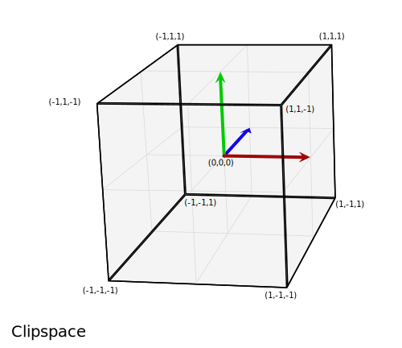
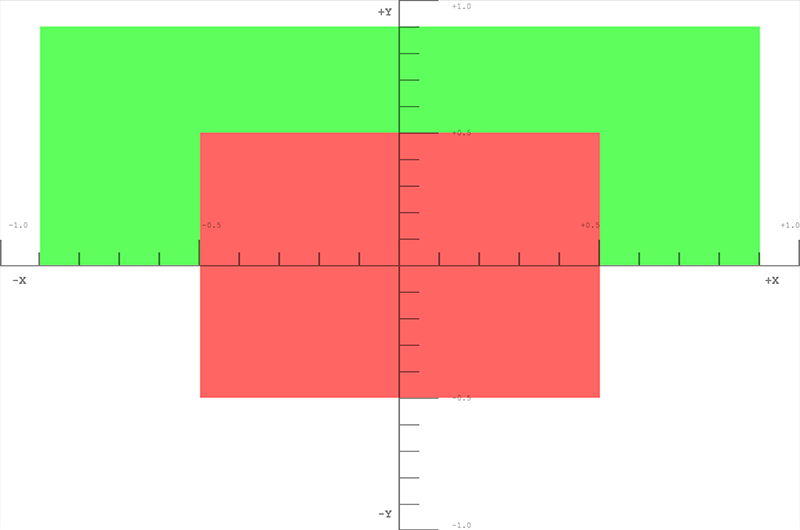
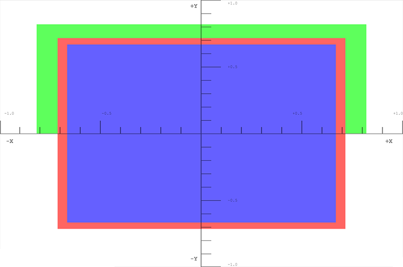
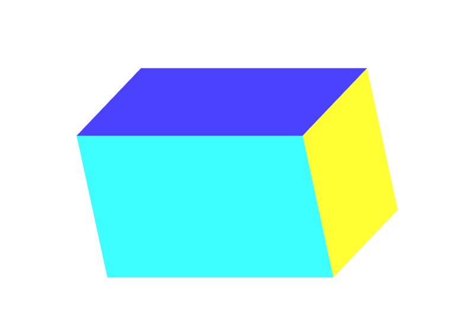
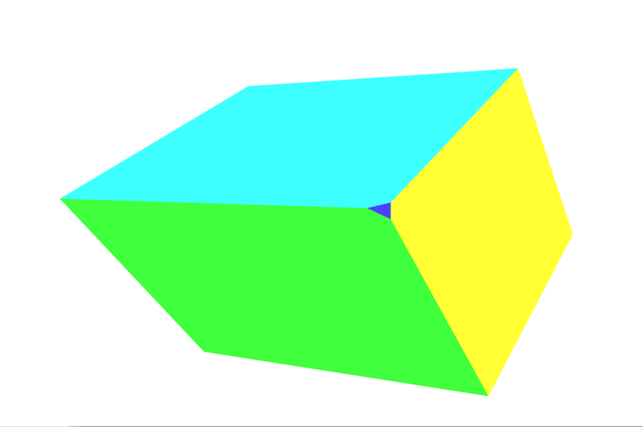
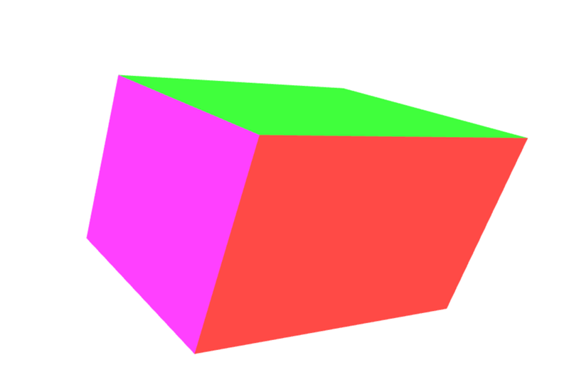
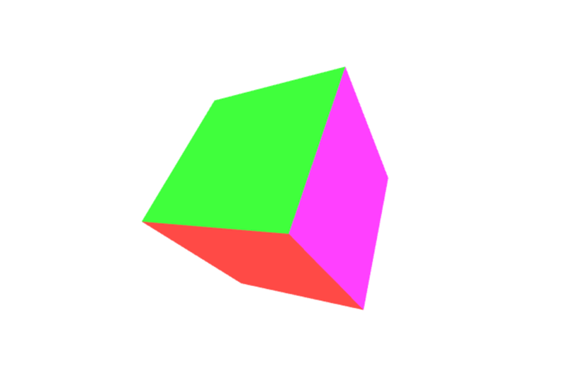
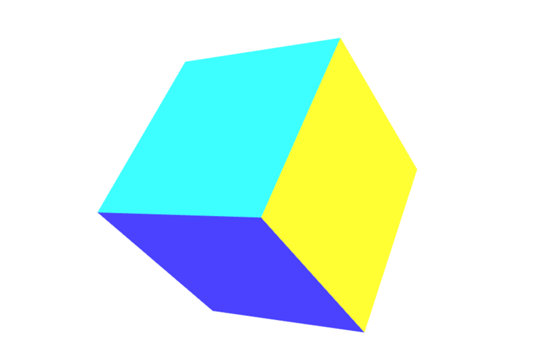

This article explores how to take data within a WebGL project, and project it into the proper spaces to display it on the screen. It assumes a knowledge of basic matrix math using translation, scale, and rotation matrices. It explains the three core matrices that are typically used to represent a 3D object: the model, view and projection matrices.
Note: This article is also available as an MDN content kit. It also uses a collection of utility functions available under the MDN global object.
The model, view, and projection matrices
Individual transformations of points and polygons in space in WebGL are handled by the basic transformation matrices like translation, scale, and rotation. These matrices can be composed together and grouped in special ways to make them useful for rendering complicated 3d scenes. These composed matrices ultimately move the original model data around into a special coordinate space called clip space. This is a 2 unit wide cube. The center coordinate is (0,0,0), while the corners range from (-1,-1,-1) to (1,1,1). This clip space is compressed down into a 2d space and rasterized into an image.
The first matrix discussed below is the model matrix, which defines how you take your original model data and move it around in 3d world space. In order to take world space coordinates and move them into the clip space cube, a projection matrix is needed. A common matrix used for projection is the perspective matrix, which mimics the effects of a typical camera. Finally if you want to move the camera around, a view matrix is needed to define the location of the camera in the scene.
The sections below will take an in-depth look into the ideas and implementation of the model, view, and projection matrices. These matrices are core to moving data around on the screen, and are concepts that transcend individual frameworks and engines.
Clip space
In a WebGL program data is typically uploaded to the GPU with its own coordinate system and then the vertex shader transforms those points into a different coordinate system known as clip space. If any data is outside of the clip space, then it is clipped off and not rendered. However, if a triangle straddles the border of this space then it is chopped up into new triangles, and only the parts of the new triangles that are in clip space are kept.

The above graphic is a visualization of the clip space that all of the points must fit into. It is 2 units wide, and consists of a cube from the corner (-1,-1,-1) to the corner (1,1,1). The middle of the cube is the point (0,0,0).
For this section we will put our data into the clip space coordinate system directly. Normally model data is used that is in some arbitrary coordinate system, and is then transformed using a matrix, placing it in the clip space coordinate system. For this example it's easiest to illustrate how clip space works by using values ranging from (-1,-1,-1) to (1,1,1). The code below will create 2 triangles that will draw a square on the screen. The Z depth in the squares determines what gets drawn on top when the squares share the same space. The smaller Z values are rendered on top of the larger Z values.
WebGLBox example
This example will create a custom WebGLBox object that will draw a box on the screen.
Note: The code for each WebGLBox example is available in this github repo and is organized by section. In addition there is a JSFiddle link at the bottom of each section.
WebGLBox Constructor
The constructor looks like this:
function WebGLBox() {
// Setup the canvas and WebGL context
this.canvas = document.getElementById('canvas');
this.canvas.width = window.innerWidth;
this.canvas.height = window.innerHeight;
this.gl = MDN.createContext(canvas);
var gl = this.gl;
// Setup a WebGL program, anything part of the MDN object is defined outside of this article
this.webglProgram = MDN.createWebGLProgramFromIds(gl, 'vertex-shader', 'fragment-shader');
gl.useProgram(this.webglProgram);
// Save the attribute and uniform locations
this.positionLocation = gl.getAttribLocation(this.webglProgram, 'position');
this.colorLocation = gl.getUniformLocation(this.webglProgram, 'color');
// Tell WebGL to test the depth when drawing, so if a square is behind
// another square it won't be drawn
gl.enable(gl.DEPTH_TEST);
}
WebGLBox draw
Now we'll create a method to draw a box on the screen.
WebGLBox.prototype.draw = function(settings) {
// Create some attribute data; these are the triangles that will end being
// drawn to the screen. There are two that form a square.
var data = new Float32Array([
//Triangle 1
settings.left, settings.bottom, settings.depth,
settings.right, settings.bottom, settings.depth,
settings.left, settings.top, settings.depth,
//Triangle 2
settings.left, settings.top, settings.depth,
settings.right, settings.bottom, settings.depth,
settings.right, settings.top, settings.depth
]);
// Use WebGL to draw this onto the screen.
// Performance Note: Creating a new array buffer for every draw call is slow.
// This function is for illustration purposes only.
var gl = this.gl;
// Create a buffer and bind the data
var buffer = gl.createBuffer();
gl.bindBuffer(gl.ARRAY_BUFFER, buffer);
gl.bufferData(gl.ARRAY_BUFFER, data, gl.STATIC_DRAW);
// Setup the pointer to our attribute data (the triangles)
gl.enableVertexAttribArray(this.positionLocation);
gl.vertexAttribPointer(this.positionLocation, 3, gl.FLOAT, false, 0, 0);
// Setup the color uniform that will be shared across all triangles
gl.uniform4fv(this.colorLocation, settings.color);
// Draw the triangles to the screen
gl.drawArrays(gl.TRIANGLES, 0, 6);
}
The shaders are the bits of code written in GLSL that take our data points and ultimately render them to the screen. For convenience these shaders are stored in a <script> element that is brought into the program through the custom function MDN.createWebGLProgramFromIds(). This function is part of a collection of utility functions written for these tutorials and is not explained in depth here. This function handles the basics of taking some GLSL source code and compiling it into a WebGL program. The function takes three parameters — the context to render the program in, the ID of the <script> element containing the vertex shader, and the ID of the <script> element containing the fragment shader. The vertex shader positions the vertices, and the fragment shader colours each pixel.
First take a look at the vertex shader that will move the vertices on the screen:
// The individual position vertex
attribute vec3 position;
void main() {
// the gl_Position is the final position in clip space after the vertex shader modifies it
gl_Position = vec4(position, 1.0);
}
Next, to actually rasterize the data into pixels, the fragment shader evaluates everything on a per pixel basis, setting a single color.
precision mediump float;
uniform vec4 color;
void main() {
gl_FragColor = color;
}
With those settings included it's time to directly draw to the screen using clip space coordinates.
var box = new WebGLBox();
First draw a red box in the middle.
box.draw({
top : 0.5, // x
bottom : -0.5, // x
left : -0.5, // y
right : 0.5, // y
depth : 0, // z
color : [1, 0.4, 0.4, 1] // red
});
Next, draw a green box up top and behind the red box.
box.draw({
top : 0.9, // x
bottom : 0, // x
left : -0.9, // y
right : 0.9, // y
depth : 0.5, // z
color : [0.4, 1, 0.4, 1] // green
});
Finally for demonstration that clipping is actually going on, this box doesn't get drawn because it's outside of clip space. The depth is outside of the -1.0 to 1.0 range.
box.draw({
top : 1, // x
bottom : -1, // x
left : -1, // y
right : 1, // y
depth : -1.5, // z
color : [0.4, 0.4, 1, 1] // blue
});
The results

Exercise
A helpful exercise at this point is to move the boxes around the clip space by varying the code to get a feel for how points get clipped and moved around in clip space. Try drawing a picture like a boxy smiley face with a background.
Homogeneous Coordinates
The main line of the previous clip space vertex shader contained this code:
gl_Position = vec4(position, 1.0);
The position variable was defined in the draw() method and passed in as an attribute to the shader. This is a three dimensional point, but the gl_Position variable that ends up getting passed down through the pipeline is actually 4 dimensional — instead of (x,y,z) it is (x,y,z,w). There is no letter after z, so for convention this fourth dimension is labeled w. In the above example the w coordinate is being set to 1.0. The obvious question is "why the extra dimension?" It turns out that this addition allows for lots of nice techniques for manipulating 3D data.
A three dimensional point is defined in a typical Cartesian coordinate system. The added 4th dimension changes this point into a homogeneous coordinate. It still represents a point in 3D space and it can easily be demonstrated how to construct this type of coordinate through a pair of simple functions.
function cartesianToHomogeneous(point) {
var x = point[0];
var y = point[1];
var z = point[2];
return [x, y, z, 1];
}
function homogeneousToCartesian(point) {
var x = point[0];
var y = point[1];
var z = point[2];
var w = point[3];
return [x/w, y/w, z/w];
}
As can be seen, the w component divides the x, y, and z components. When the w component is a non-zero real number then homogeneous coordinate easily translates back into a normal point in Cartesian space. Now what happens if the w component is zero? In JavaScript the value returned would be as follows.
homogeneousToCartesian([10, 4, 5, 0]);
This evaluates to: [Infinity, Infinity, Infinity]
This homogeneous coordinate represents some point at infinity. This is a handy way to represent a ray shooting off from the origin in a specific direction. In addition to a ray, it could also be thought of as a representation of a directional vector. If this homogeneous coordinate is multiplied against a matrix with a translation then the translation is effectively stripped out.
When numbers are extremely large (or extremely small) on computers they begin to become less and less precise because there are only so many ones and zeros that are used to represent them. The more operations that are done on larger numbers, the more and more errors accumulate into the result. When dividing by w, this can effectively increase the precision of very large numbers by operating on two potentially smaller, less error-prone numbers.
The final benefit of using homogeneous coordinates is that they fit very nicely for multiplying against 4x4 matrices. A vertex must match at least one of the dimensions of a matrix in order to be multiplied against it. The 4x4 matrix can be used to encode a variety of useful transformations. In fact, the typical perspective matrix uses the division by the w component to achieve its transformation.
The clipping of points and polygons from clip space actually happens after the homogeneous coordinates have been transformed back into Cartesian coordinates (by dividing by w). This final space is known as "normalized device coordinates" or NDC.
To start playing with this idea the previous example can be modified to allow for the use of the W component.
//Redefine the triangles to use the W component var data = new Float32Array([ //Triangle 1 settings.left, settings.bottom, settings.depth, settings.w, settings.right, settings.bottom, settings.depth, settings.w, settings.left, settings.top, settings.depth, settings.w, //Triangle 2 settings.left, settings.top, settings.depth, settings.w, settings.right, settings.bottom, settings.depth, settings.w, settings.right, settings.top, settings.depth, settings.w ]);
Then the vertex shader uses the 4 dimensional point passed in.
attribute vec4 position;
void main() {
gl_Position = position;
}
First, we draw a red box in the middle, but set W to 0.7. As the coordinates get divided by 0.7 they will all be enlarged.
box.draw({
top : 0.5, // y
bottom : -0.5, // y
left : -0.5, // x
right : 0.5, // x
w : 0.7, // w - enlarge this box
depth : 0, // z
color : [1, 0.4, 0.4, 1] // red
});
Now, we draw a green box up top, but shrink it by setting the w component to 1.1
box.draw({
top : 0.9, // y
bottom : 0, // y
left : -0.9, // x
right : 0.9, // x
w : 1.1, // w - shrink this box
depth : 0.5, // z
color : [0.4, 1, 0.4, 1] // green
});
This last box doesn't get drawn because it's outside of clip space. The depth is outside of the -1.0 to 1.0 range.
box.draw({
top : 1, // y
bottom : -1, // y
left : -1, // x
right : 1, // x
w : 1.5, // w - Bring this box into range
depth : -1.5, // z
color : [0.4, 0.4, 1, 1] // blue
});
The results

Exercises
- Play around with these values to see how it affects what is rendered on the screen. Note how the previously clipped blue box is brought back into range by setting its w component.
- Try creating a new box that is outside of clip space and bring it back in by dividing by w.
Model Transform
Placing points directly into clip space is of limited use. What's better is to take model data and transform it into clip space. The humble cube is an easy example of how to do this. Cube data consists of vertex positions, the colors of the faces of the cube, and the order of the vertex positions that make up the individual polygons (in groups of 3). The positions and colors are stored in buffers, sent to the shader as attributes, and then operated upon individually.
Finally a single model matrix is set that represents the transformations that will be performed on each position that makes up the model to move it into the correct space. In this case, for every frame of the animation a series of scale, rotation, and translation matrices move the data into the desired spot in clip space. The cube is the size of clip space (-1,-1,-1) to (1,1,1) so it will need to be shrunk down to fit. This matrix is sent directly to the shader, having been multiplied in JavaScript beforehand.
The following code sample defines a method on the CubeDemo object that will create the model matrix. It uses custom functions to create and multiply matrices as defined in the MDN WebGL shared code. The new function looks like this:
CubeDemo.prototype.computeModelMatrix = function(now) {
//Scale down by 50%
var scale = MDN.scaleMatrix(0.5, 0.5, 0.5);
// Rotate a slight tilt
var rotateX = MDN.rotateXMatrix(now * 0.0003);
// Rotate according to time
var rotateY = MDN.rotateYMatrix(now * 0.0005);
// Move slightly down
var position = MDN.translateMatrix(0, -0.1, 0);
// Multiply together, make sure and read them in opposite order
this.transforms.model = MDN.multiplyArrayOfMatrices([
position, // step 4
rotateY, // step 3
rotateX, // step 2
scale // step 1
]);
};
In order to use this in the shader it must be set to a uniform location. The locations for the uniforms are saved in the locations object shown below:
this.locations.model = gl.getUniformLocation(webglProgram, 'model');
And finally the uniform is set to that location.
gl.uniformMatrix4fv(this.locations.model, false, new Float32Array(this.transforms.model));
In the shader each position vertex is first transformed into a homogeneous coordinate (vec4), and then multiplied against the model matrix.
gl_Position = model * vec4(position, 1.0);
Note: In JavaScript matrix multiplication requires a custom function, while in the shader it is built into the language with the simple * operator.
The results

At this point the w value of the transformed point is still 1.0. The cube still doesn't have any perspective. The next section will take this setup and modify the w values to provide some perspective.
Exercises
- Shrink down the box using the scale matrix and position it in different places within clip space.
- Try moving it outside of clip space.
- Resize the window and watch as the box skews out of shape.
- Add a
rotateZmatrix.
Divide by W
An easy way to start getting some perspective on our model of the cube is to take the Z coordinate and copy it over to the w coordinate. Normally when converting a cartesian point to homogeneous it becomes (x,y,z,1), but we're going to set it to something like (x,y,z,z). In reality we want to make sure that z is greater than 0 for points in view, so we'll modify it slightly by changing the value to ((1.0 + z) * scaleFactor). This will take a point that is normally in clip space (-1 to 1) and move it into a space more like (0 to 1) depending on what the scale factor is set to. The scale factor changes the final w value to be either higher or lower overall.
The shader code looks like this.
// First transform the point vec4 transformedPosition = model * vec4(position, 1.0); // How much effect does the perspective have? float scaleFactor = 0.5; // Set w by taking the z value which is typically ranged -1 to 1, then scale // it to be from 0 to some number, in this case 0-1. float w = (1.0 + transformedPosition.z) * scaleFactor; // Save the new gl_Position with the custom w component gl_Position = vec4(transformedPosition.xyz, w);
The results

Exercise
If that sounds a little abstract open up the vertex shader and play around with the scale factor and watch how it shrinks vertices more towards the surface. Completely change the w component values for really trippy representations of space.
In the next section we'll take this step of copying Z into the w slot and turn it into a matrix.
Simple Projection
The last step of filling in the w component can actually be accomplished with a simple matrix. Start with the identity matrix:
var identity = [ 1, 0, 0, 0, 0, 1, 0, 0, 0, 0, 1, 0, 0, 0, 0, 1, ]; MDN.multiplyPoint(identity, [2, 3, 4, 1]); //> [2, 3, 4, 1]
Then move the last column's 1 up one space.
var copyZ = [ 1, 0, 0, 0, 0, 1, 0, 0, 0, 0, 1, 1, 0, 0, 0, 0, ]; MDN.multiplyPoint(copyZ, [2, 3, 4, 1]); //> [2, 3, 4, 4]
However in the last example we performed (z + 1) * scaleFactor:
var scaleFactor = 0.5; var simpleProjection = [ 1, 0, 0, 0, 0, 1, 0, 0, 0, 0, 1, scaleFactor, 0, 0, 0, scaleFactor, ]; MDN.multiplyPoint(simpleProjection, [2, 3, 4, 1]); //> [2, 3, 4, 2.5]
Breaking it out a little further we can see how this works:
var x = (2 * 1) + (3 * 0) + (4 * 0) + (1 * 0) var y = (2 * 0) + (3 * 1) + (4 * 0) + (1 * 0) var z = (2 * 0) + (3 * 0) + (4 * 1) + (1 * 0) var w = (2 * 0) + (3 * 0) + (4 * scaleFactor) + (1 * scaleFactor)
The last line could be simplified to:
w = (4 * scaleFactor) + (1 * scaleFactor)
Then factoring out the scaleFactor, we get this:
w = (4 + 1) * scaleFactor
Which is exactly the same as the (z + 1) * scaleFactor that we used in the previous example.
In the box demo an additional .computeSimpleProjectionMatrix() method is added. This is called in the .draw() method and has the scale factor passed to it. The result should be identical to the last example:
CubeDemo.prototype.computeSimpleProjectionMatrix = function(scaleFactor) {
this.transforms.projection = [
1, 0, 0, 0,
0, 1, 0, 0,
0, 0, 1, scaleFactor,
0, 0, 0, scaleFactor
];
};
Although the result is identical, the import step here is in the vertex shader. Rather than modifying the vertex directly, it gets multiplied by an additional projection matrix:
// Make sure and read the transformations in reverse order gl_Position = projection * model * vec4(position, 1.0);
The results

Perspective Matrix
Up to this point we've built up our own 3D rendering setup, step by step. However the current rig has some issues. For one, it gets skewed whenever we resize our window. Another is that our simple projection doesn't handle a wide range of values for the scene data. Most scenes don't work in clip space. It would be helpful to define what distance is relevant to the scene so that precision isn't lost in converting the numbers. Finally it's very helpful to have a fine-tuned control over what points get placed inside and outside of clip space. In the previous examples the corners of the cube occasionally get clipped.
The perspective matrix is a type of projection matrix that accomplishes all of these requirements. The math also starts to get a bit more involved and won't be fully explained in these examples. In short it combines dividing by w (as done with the previous examples) with some ingenious manipulations based on similar triangles. If you want to read a full explanation of the math behind it check out some of the following links:
- OpenGL Projection Matrix
- Perspective Projection
- Trying to understand the math behind the perspective matrix in WebGL
One important thing to note about the perspective matrix used below is that it flips the z axis. In clip space the z+ goes away from the viewer, while with this matrix it comes towards the viewer.
Note: The reason for this flipping of the z axis is that the clip space coordinate system is a left-handed coordinate system (z-axis points into the screen), while the convention in mathematics, physics and 3D modeling, as well as for the view/eye coordinate system in OpenGL, is to use a right-handed coordinate system (z-axis points out of the screen towards the viewer) . More on that in the relevant Wikipedia articles: Cartesian coordinate system, Right-hand rule.
MDN.perspectiveMatrix = function(fieldOfViewInRadians, aspectRatio, near, far) {
var f = 1.0 / Math.tan(fieldOfViewInRadians / 2);
var rangeInv = 1 / (near - far);
return [
f / aspectRatio, 0, 0, 0,
0, f, 0, 0,
0, 0, (near + far) * rangeInv, -1,
0, 0, near * far * rangeInv * 2, 0
];
}
The four arguments work as follows.
fieldOfViewInRadians: This represents the angle of how much is in view in the scene. The larger the number is, the more is visible by the camera. The geometry at the edges becomes more and more distorted, equivalent to a wide angle lens. When the field of view is larger the objects typically get smaller. When the field of view is smaller, then the camera can see less and less in the scene. The objects are distorted much less by perspective and objects seem much closer to the camera.- aspectRatio: This is the aspect ratio of the scene — width divided by height. In these examples that's the window width divided by the window height. This parameter finally stops the example form being warped by the size of the canvas.
nearClippingPlaneDistance: This positive number represents the plane that clips off geometry that is too close to the camera. Anything at this distance will be at -1 in clip space. It shouldn't be set to 0.farClippingPlaneDistance: This positive number represents the plane that clips off geometry that is too far away from the camera. Anything at this distance will be at 1 in clip space. It should be kept reasonably close to the distance of the geometry so that precision errors don't creep into the rendering.
In the latest version of the box demo the computeSimpleProjectionMatrix() method has been replaced with the computePerspectiveMatrix() method.
CubeDemo.prototype.computePerspectiveMatrix = function() {
var fieldOfViewInRadians = Math.PI * 0.5;
var aspectRatio = window.innerWidth / window.innerHeight;
var nearClippingPlaneDistance = 1;
var farClippingPlaneDistance = 50;
this.transforms.projection = MDN.perspectiveMatrix(
fieldOfViewInRadians,
aspectRatio,
nearClippingPlaneDistance,
farClippingPlaneDistance
);
};
The shader code will be identical to the previous example:
gl_Position = projection * model * vec4(position, 1.0);
Additionally, (not shown) the position and scale matrices of the model have been changed to take it out of clip space and into the larger coordinate system.
The results

Exercises
- Experiment with the parameters of the perspective matrix and the model matrix.
- Swap out the perspective matrix to use orthographic projection. In the MDN WebGL shared code you'll find the
MDN.orthographicMatrix(). This can replace theMDN.perspectiveMatrix()function inCubeDemo.prototype.computePerspectiveMatrix().
View Matrix
The final step in all of this is to create the view matrix. Right now we can move the cube around world space. We can project everything to have perspective, but we still can't move the camera.
The final matrix is the view matrix that represents the camera's location in space. Imagine shooting a movie with a physical camera. This matrix represents the position and rotation of that physical camera.
Unlike the model matrix, which directly transforms the model vertices, the view matrix moves an abstract camera around. In reality the vertex shader is still only moving the models and the "camera" stays in place. In order for this to work out correctly the inverse of the transform matrix must be used. The inverse matrix essentially reverses a transformation. So if we move the camera view forward, it moves all of the objects in the scene back.
The following computeViewMatrix() method animates the view matrix by moving it in and out, and left and right.
CubeDemo.prototype.computeViewMatrix = function(now) {
var moveInAndOut = 20 * Math.sin(now * 0.002);
var moveLeftAndRight = 15 * Math.sin(now * 0.0017);
// Move the camera around
var position = MDN.translateMatrix(moveLeftAndRight, 0, 50 + moveInAndOut );
// Multiply together, make sure and read them in opposite order
var matrix = MDN.multiplyArrayOfMatrices([
//Exercise: rotate the camera view
position
]);
// Inverse the operation for camera movements, because we are actually
// moving the geometry in the scene, not the camera itself.
this.transforms.view = MDN.invertMatrix(matrix);
};
The shader now uses three matrices.
gl_Position = projection * view * model * vec4(position, 1.0);
After this step the GPU pipeline will clip the out of range vertices, and send the model down to the fragment shader for rasterization.
The results

Relating the coordinate systems
At this point it would be beneficial to take a step back and look at and label the various coordinate systems. First off the cube's vertices are in model space. To move the model around the scene these vertices need to be converted into world space.
model space → model matrix → world space
The camera hasn't done anything yet, and the points need to be moved again. Currently they are in world space, but they need to be moved to view space.
world space → view matrix → view space
Finally a projection (in our case the perspective matrix) needs to be added. This final step will move it into clip space.
view space → projection matrix → clip space
Exercise
- Move the camera around the scene.
- Add some rotation matrices to the view matrix to look around.
- Finally, track the mouse's position. Use 2 rotation matrices to have the camera look up and down based on where the user's mouse is on the screen.